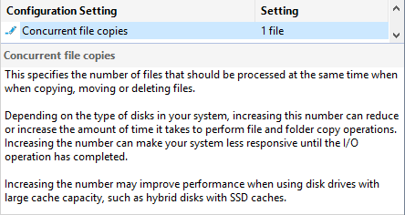
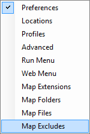
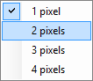
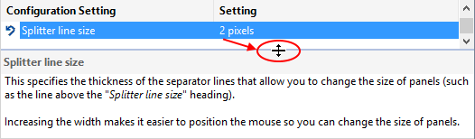

The Installer Tool uses these Configuration Settings to control how certain operations are performed and various aspects of the user interface. These are the settings I use.

Click the  Edit Icon, Right-Click, Double-Click or press the Space Bar to access the options menu.
Edit Icon, Right-Click, Double-Click or press the Space Bar to access the options menu.
Select a Configuration Setting to display details in the information panel.

These are a few Settings that you may want to adjust to customise your experience.
|
 |
By default, the Preferences page is displayed when you click Advanced Settings from the Options menu. If you use a different page more frequently, you can specify which page to display, when opening Settings, by defining the start page. Display the Advanced Settings Start Page menu, select the page you use frequently and click the Save button. |
|
 |
This specifies the thickness of the separator lines that allow you to change the size of panels (such as the line above the "Splitter line size" heading). Increasing the width makes it easier to position the mouse so you can change the size of panels. |
Display the Splitter line size menu, select your preferred width and click the Save button.

Specify program and file Locations
Specify Configuration Settings
Customise the Quick Access Toolbar